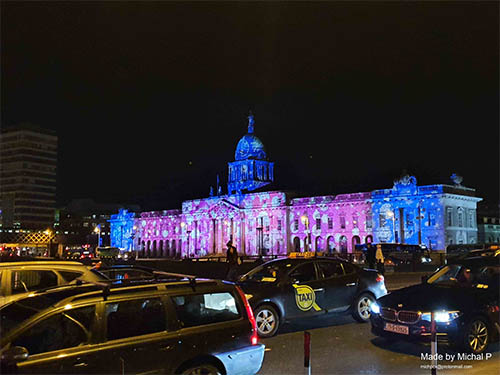

Ireland 
Dublin, December 2019 - Late December of 2019 I decided to take a flight to Ireland and visit it's capital, Dublin. This is where I tried world's famous Guiness beer and visited the famous Temple Bar. I also took a walk around the main street where I found numerous statues of the great femine as well as Dublin library (which you can see in the background).
- 